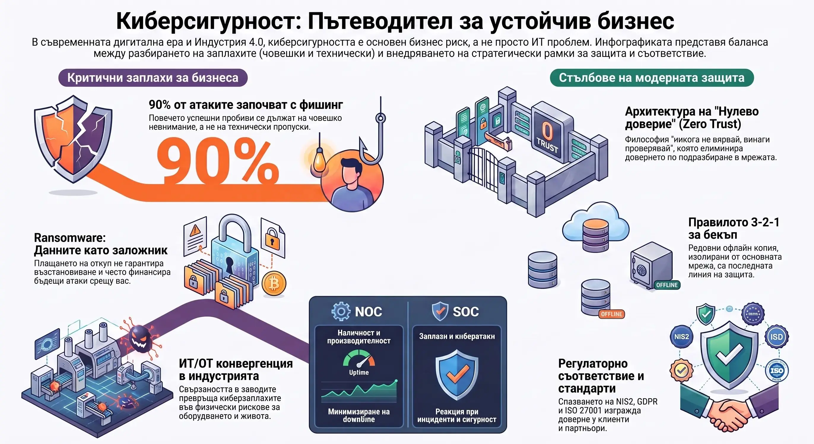

Endpoint Security · Malware Prevention · Detection & Response
EDR vs Antivirus: каква е разликата и може ли EDR да замени антивируса?
Antivirus/antimalware цели да открива и блокира зловреден софтуер; EDR добавя фокус върху endpoint telemetry, разследване и response. На практика функциите често се припокриват и са пакетирани заедно. Сравнявайте реалните възможности на конкретния продукт и лиценз, не само имената на категориите.

⚠️ Важна бележка: Тази публикация е с информационна и образователна цел и не представлява юридическо или правно тълкуване на приложимото законодателство. Обстоятелствата варират, а нормативните изисквания се променят. При конкретен казус се консултирайте с квалифициран юрист.
Краткият отговор: не приемайте, че EDR автоматично заменя antivirus или че antivirus работи само със сигнатури. Съвременните продукти могат да комбинират prevention, поведенчески анализ, endpoint telemetry и response. Проверете кои функции са активни, какво покриват и кой обработва сигналите.
EDR и antivirus накратко
| Критерий | Antivirus / antimalware | EDR |
|---|---|---|
| Основен фокус | Откриване, блокиране или карантиниране на зловредни файлове и действия. | Събиране на endpoint telemetry и подпомагане на detection, investigation и response. |
| Методи и данни | Може да използва signatures, heuristics, reputation, cloud intelligence и behavior-based техники. | Може да показва процеси, събития и времева линия на устройството, според агента и платформата. |
| Типичен резултат | Блокиране или карантиниране на подозрителен обект; възможностите зависят от policy. | Alert и контекст за разследване; някои решения могат да блокират процес или изолират endpoint. |
| Основен въпрос | Как се предотвратява или блокира зловредна активност на устройството? | Какво се е случило на устройството, как е свързано с други събития и как да се реагира? |
| Оперативна нужда | Актуализации, policy и проверка на deployment/health. | Същото endpoint управление плюс owner за alerts, triage, escalation и response права. |
Какво прави antivirus/antimalware?
Antivirus е познатото име за инструменти за защита от malware; много съвременни предложения се описват по-широко като antimalware или endpoint protection. Те могат да сканират файлове и процеси, да проверяват репутация, да използват сигнатури и евристики и да блокират или поставят под карантина обекти според настройките.
Не е точно да се обобщава, че antivirus разчита само на signatures. MITRE ATT&CK описва в M1049 Antivirus/Antimalware техники за откриване и карантиниране, включително евристични и поведенчески подходи. Конкретната комбинация от функции и административни контроли зависи от продукта.
Какво добавя EDR?
EDR (Endpoint Detection and Response) поставя по-силен акцент върху събирането и анализирането на endpoint събития, връзките между тях и подпомагането на разследването. Тази телеметрия може да помогне да се види process tree, user/device context или поредица от подозрителни действия, доколкото агентът и конфигурацията предоставят тези данни.
Според продукта, лиценза и policy EDR може да позволи блокиране на процес, ограничаване на активност или изолиране на устройство. Това не е еднакво във всички решения и не означава, че някой непрекъснато наблюдава сигналите. Необходими са owner, triage и договорени response права.
Пример: подозрителен скрипт на работна станция
Ако потребител отвори файл, който стартира подозрителен скрипт, antimalware контрол може да блокира файла или процеса, ако наличната защита го разпознае според своите правила. EDR може допълнително да предостави процесния контекст, предходните и следващите събития и връзката с потребителя или устройството, за да подпомогне разследването и response.
Това е илюстрация на типичните акценти, не гарантирано разделение на продукта: съвременна endpoint платформа може да изпълнява и двата вида работа. Резултатът зависи от покритие, policy, telemetry, версия, изключения и реакцията на екипа.
Може ли EDR да замени antivirus?
Самото име EDR не отговаря на този въпрос. Някои решения комбинират endpoint prevention и EDR функции в общ agent; други изискват отделни компоненти, лиценз или настройки. Проверете дали внедрената конфигурация включва нужните antimalware controls, сканиране, cloud/reputation функции, tamper protection, updates, exclusions и поддръжка за всички системи в scope.
Също така проверете производителя и вътрешната политика: два endpoint агента могат да си пречат, да създават излишно натоварване или да изискват конкретни exclusions. Не премахвайте съществуваща защита, преди да потвърдите функционалния обхват, съвместимостта и условията на лиценза.
Какво да проверите при избор или преглед?
- Избройте активите: работни станции, сървъри, виртуални машини и платформи, включително неподдържаните устройства и системи със специални изисквания.
- Потвърдете prevention: как се сканират файлове и процеси, какви detection механизми са активни и как се управляват updates, quarantine и exclusions?
- Потвърдете EDR telemetry: кои събития се събират, колко време се пазят и как се разследва process/device timeline?
- Тествайте response: кой може да блокира или изолира устройство, как се одобрява действието и как се възстановява легитимна работа?
- Проверете оперативната отговорност: кой преглежда alerts и в какви часове; как се ескалират събитията; има ли вътрешен екип или договорена услуга?
- Измерете покритието: сравнете asset inventory с agent deployment и health, проверете неуправляваните активи и policy exceptions.
При тест използвайте безопасни, одобрени проверки и vendor guidance. Целта е да се потвърди работата на защитните и response процеси, без да се създава риск за production услуги.
Често задавани въпроси
EDR заменя ли антивируса?
Не автоматично. Някои endpoint платформи комбинират prevention и EDR функции, но трябва да се провери дали конкретният продукт, лиценз и конфигурация покриват нужните контроли.
Антивирусът използва ли само сигнатури?
Не. Съвременните antimalware продукти могат да използват сигнатури, евристики, cloud reputation и поведенчески техники; наличните възможности зависят от решението.
EDR и antivirus могат ли да работят заедно?
Да, ако са съвместими и конфигурирани правилно. Проверете дали няма конфликт между агенти, дублиращо сканиране или изключения, които намаляват защитата.
EDR означава ли, че има 24/7 наблюдение?
Не. EDR е технология. Наблюдението, triage и реакцията изискват определен owner, процес и работно покритие, вътрешно или чрез услуга.